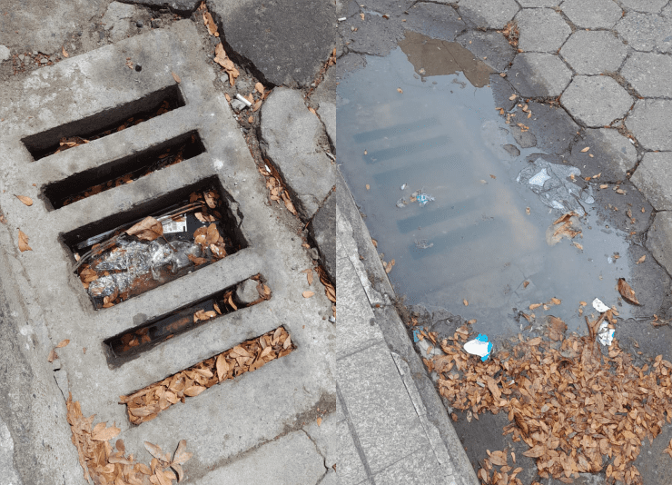

Bueiros Obsoletos, Riscos Reais
Bueiros urbanos entopem silenciosamente, causando enchentes devastadoras em minutos sem aviso prévio.
Falta de monitoramento em tempo real deixa cidades vulneráveis a alagamentos catastróficos súbitos.
